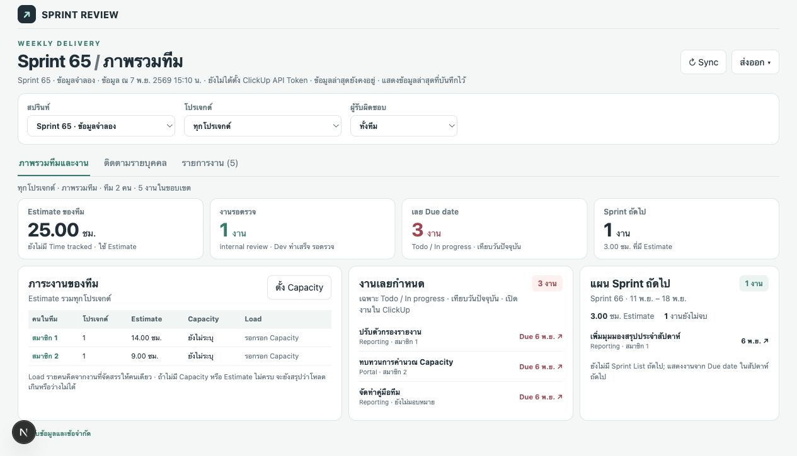
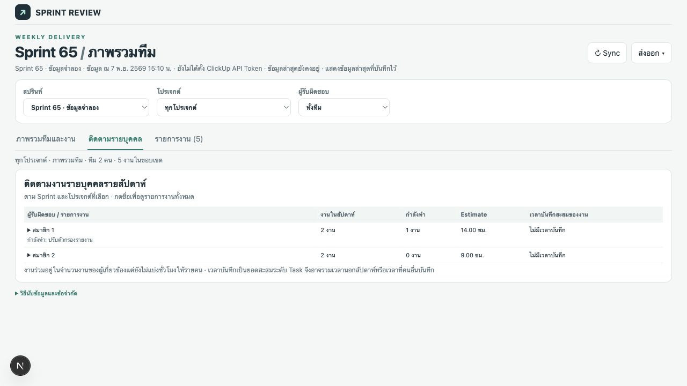
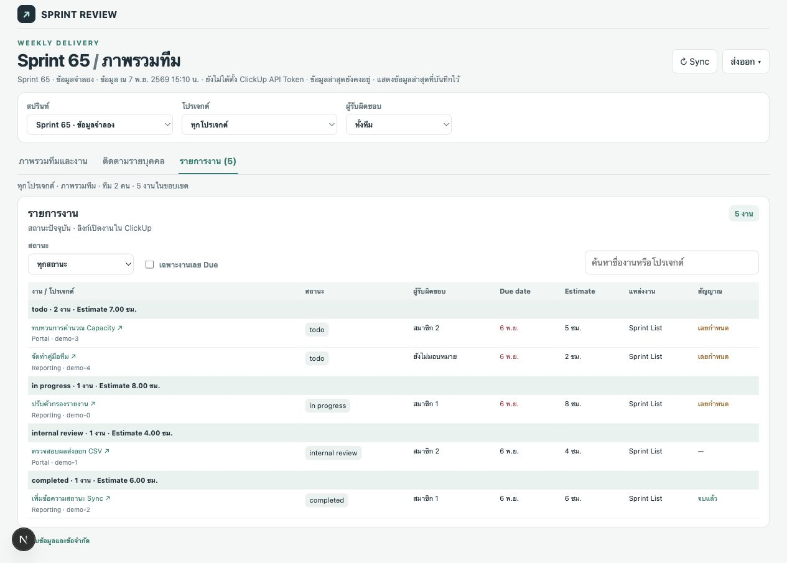

เอกสารความต้องการ
ReportClickup ช่วยให้ทีมส่งมอบงานตรวจความคืบหน้ารายสัปดาห์ ภาระงานข้ามโปรเจกต์ และแผน Sprint ถัดไปจากข้อมูล ClickUp ชุดเดียวกัน ผู้ใช้หลักคือคนอ่านรายงานและผู้ดูแลการตั้งค่า ClickUp กับรายชื่อทีม รายการต่อไปนี้สรุปความต้องการจากพฤติกรรมในซอร์ส
| รหัส | ความต้องการ | พฤติกรรมที่ตรวจสอบได้ |
|---|---|---|
| FR-01 | ดึงงานของทีมแบบอ่านอย่างเดียว | รองรับ Sprint ปัจจุบัน ย้อนหลัง 4 และล่วงหน้า 3 รวมสัปดาห์แผนที่ยังไม่มีงาน |
| FR-02 | รวมงานข้ามโปรเจกต์ | ใช้ Sprint List ที่ตรงกันในแต่ละ Space หรือใช้ Due ภายในสัปดาห์เมื่อไม่มี List และรวมด้วย Task ID |
| FR-03 | สำรวจรายงานตามขอบเขต | เลือก Sprint → โปรเจกต์ → ผู้รับผิดชอบ แล้วสลับภาพรวม รายบุคคล และรายการงานได้ |
| FR-04 | เทียบภาระงานกับ Capacity | ตั้งชั่วโมงรายคนต่อ Sprint และแสดงส่วนต่างเมื่อมีข้อมูลเพียงพอ |
| FR-05 | ติดตามความเสี่ยงและงานล่วงหน้า | แสดงงานเลยกำหนด งานรอตรวจ และแผน Sprint ถัดไป พร้อมเปิดงานใน ClickUp |
| FR-06 | นำรายงานไปใช้งานต่อ | ส่งออก CSV ของงานตามตัวกรอง ภาพสรุป PNG และพิมพ์หรือบันทึก PDF ผ่านเบราว์เซอร์ |
| NFR-01 | เก็บข้อมูลที่ใช้งานได้เมื่อ Sync ล้มเหลว | แทนที่ไฟล์ snapshot หลังดึงสำเร็จและแสดงข้อมูลล่าสุดที่บันทึกไว้เมื่อดึงไม่สำเร็จ |
| NFR-02 | จำกัดการเข้าถึง token | เก็บ ClickUp token ฝั่ง FastAPI และให้เบราว์เซอร์เรียก API ผ่าน Next.js proxy |
สถาปัตยกรรมและเส้นทางข้อมูล
Browser / React → Next.js proxy → FastAPI → ClickUp API
↕
data/sprints.json
↓
กฎรายงานใน domain.py
- เมื่อเปิดหน้า Dashboard เบราว์เซอร์โหลด snapshot และรายงานที่มีอยู่ก่อน แล้วสั่ง Sync เพื่อขอข้อมูลล่าสุด ผู้ใช้กด Sync ซ้ำได้จากหน้ารายงาน
- FastAPI อ่านการตั้งค่าและรายชื่อทีม จากนั้นเรียก ClickUp เพื่อหาช่วง Sprint และงานที่ Due ตามช่วงที่ครอบคลุม พร้อมตรวจ Sprint List ของ Space ที่พบ
- ตัวแปลงข้อมูลปรับ Task, สถานะ, Estimate, Due และผู้รับผิดชอบให้อยู่ในรูปแบบเดียวกัน เมื่อดึงสำเร็จ API รวมประวัติ Rejected ที่เคยพบและแทนไฟล์ snapshot
- เมื่อเรียกรายงาน FastAPI อ่าน snapshot และคำนวณผลตาม Sprint กับ Capacity ที่ได้รับ จากนั้นหน้า React กรองมุมมองและจัดรูปแบบเวลาเป็นชั่วโมงหรือวัน
Technology Stack
| ส่วน | เทคโนโลยี | หน้าที่ |
|---|---|---|
| Dashboard | Node.js 20+, Next.js 15.5, React 19.1, TypeScript 5.8, CSS | App Router, ตัวกรอง, หน้ารายงาน และ API proxy |
| Backend | Python 3.9+ ตาม README, FastAPI, Uvicorn, HTTPX, Pydantic 2 | เรียก ClickUp, ตรวจ request, คำนวณและส่งรายงาน |
| Storage | JSON, localStorage, sessionStorage | snapshot ฝั่งเซิร์ฟเวอร์, Capacity ต่อ Sprint และ Sprint ที่เลือกในเซสชัน |
| ส่งออก | html2canvas 1.4, CSV และ browser print | สร้าง PNG จากหน้ารายงานและใช้หน้าต่างพิมพ์สำหรับ PDF |
| ตรวจสอบ | pytest, TypeScript compiler, Next.js build, Playwright ใน devDependencies | ทดสอบกฎและการอ่าน ClickUp ตรวจชนิดข้อมูลและ build หน้าเว็บ |
เลขเวอร์ชันฝั่งเว็บอ้างอิงช่วงเวอร์ชันที่ประกาศใน package.json ของระบบหลัก ส่วนเว็บคู่มือนี้เสิร์ฟ HTML ด้วย Node.js
โครงสร้างโค้ด
| ตำแหน่งในระบบหลัก | ความรับผิดชอบ |
|---|---|
api/app/main.py | ประกาศ API, ประสาน Sync, บันทึกเวลาแรกที่พบ Rejected และส่งข้อมูลเข้า report() |
api/app/clickup.py | อ่าน ClickUp แบบแบ่งหน้าและ retry, ค้นหา Sprint List และ normalize งาน |
api/app/domain.py | รวมข้อมูลตาม Sprint และคำนวณยอดงาน, Estimate, Capacity และสัญญาณผิดปกติ |
api/app/cache.py | อ่าน snapshot และเขียนผ่านไฟล์ชั่วคราวก่อนแทนไฟล์จริง |
api/app/settings.py, team.py | อ่าน env หรือ .env และสร้างชุด ID สมาชิกทีม |
web/app/page.tsx | โหลดรายงาน, คุมตัวกรอง, ตั้ง Capacity, สร้างแผนถัดไปและส่งออก |
web/components/ReportViews.tsx | แสดงภาพรวม รายบุคคล รายการงาน และคำอธิบายวิธีนับ |
web/app/api/proxy/[...path]/route.ts | ส่งคำขอจาก browser ไปยังกลุ่ม endpoint ที่อนุญาตใน FastAPI |
web/lib/, api/tests/ | ชนิดข้อมูลและตัวเรียก API ฝั่งเว็บ กับชุดทดสอบ client และกฎรายงาน |
วิธีอ่านหน้ารายงาน
- แถบหัวรายงาน ตรวจ Sprint ที่เลือก เวลาเก็บข้อมูล และข้อความ Sync ก่อนอ่านตัวเลข เมนูส่งออกอยู่ถัดจากปุ่ม Sync
- ตัวกรอง เลือก Sprint ก่อน แล้วเลือกโปรเจกต์และผู้รับผิดชอบ รายชื่อผู้รับผิดชอบจะปรับตามโปรเจกต์ที่เลือก
- ภาพรวมทีมและงาน ดูภาระงาน ตาราง Capacity งานรอตรวจ งานเลยกำหนด และแผน Sprint ถัดไป กดรายการงานเพื่อเปิดใน ClickUp
- ติดตามรายบุคคล ใช้ตรวจภาระงานของสมาชิกและงานที่อยู่ในขอบเขตที่เลือก
- รายการงาน ใช้ตัวกรองสถานะ งานเลยกำหนด หรือช่องค้นหาเพื่อตรวจรายการที่อยู่เบื้องหลังยอดสรุป
ภาพต่อไปนี้ถ่ายจาก Dashboard ของระบบหลักที่รันด้วย snapshot จำลอง ค่าแจ้งเตือน Sync ในภาพเกิดจากการไม่ได้ตั้ง token ในชุดสาธิต



กฎรายงานและข้อจำกัด
- ขอบเขตโปรเจกต์ Project หมายถึง ClickUp Space รายงานแสดงงานที่เกี่ยวข้องกับรายชื่อทีมและงานใน Sprint List ที่ยังไม่มอบหมาย การค้นพบ Space อัตโนมัติขึ้นกับงานของทีมที่พบในช่วง Due หรืองานใน Sprint List หลัก
- จำนวนงานและชั่วโมง นับ Task ID หนึ่งครั้ง เมื่อมีทั้งข้อมูลจาก Due และ List ให้ใช้จาก List ยอดจำนวนรายการรวม Parent ได้ แต่ยอด Estimate ใช้รายการที่ไม่มี Subtask อยู่ในชุดที่นำมานับ เพื่อเลี่ยงบวกชั่วโมงซ้ำ งานไม่มี Estimate ทำให้ยอดชั่วโมงเป็นค่าขั้นต่ำ
- Done และ QA สถานะ Completed หรือ Closed หรือ status type Done/Closed ถือว่าเสร็จ ส่วน Completed ใช้สื่อว่า Dev เสร็จและ QA ผ่าน Internal review คือ Dev เสร็จและรอตรวจ จึงไม่นับชั่วโมงในงาน Dev คงเหลือ
- เลยกำหนด ตรวจเฉพาะ Todo และ In progress ตามสถานะที่ระบบรองรับ ถ้า Due มีเวลาชัดเจนให้เทียบ timestamp หากไม่มีเวลาให้เริ่มนับว่าเลยกำหนดในวันถัดไปตามเวลา Bangkok
- Capacity กรอกได้ 0–168 ชั่วโมงต่อคนต่อ Sprint เก็บในเบราว์เซอร์ Free = Capacity − Estimate ของงานที่รับผิดชอบคนเดียว โดยใช้ Load รวมทุกโปรเจกต์ ถ้ามีงานร่วม งานเดี่ยวที่ขาด Estimate หรือยังไม่ได้ตั้ง Capacity ระบบจะไม่สรุป Free
- ข้อจำกัดข้อมูลย้อนหลัง Sprint เก่าแสดงสถานะจาก snapshot ล่าสุดที่ Sync ประวัติ Rejected เริ่มเมื่อระบบสังเกตเห็นจาก snapshot ส่วน Sprint Goal, Demo, PO feedback และหลักฐานทดสอบยังต้องมีแหล่งข้อมูลแบบมีโครงสร้าง
API และข้อมูลที่จัดเก็บ
เบราว์เซอร์เรียก /api/proxy/… ใน Next.js ซึ่งส่งต่อไปที่ /api/… ใน FastAPI
| FastAPI endpoint | การทำงาน |
|---|---|
GET /api/health | สถานะ API และสถานะการตั้งค่า token |
GET /api/sprints | รายการ Sprint ที่เลือกได้จาก snapshot |
GET /api/snapshot | snapshot ล่าสุดพร้อมงาน ช่วงเวลา แหล่งข้อมูล และประวัติที่สังเกตได้ |
POST /api/sync | ดึงข้อมูลใหม่และส่งเวลาที่ Sync สำเร็จ หาก ClickUp ล้มเหลวตอบ 503 |
GET /api/report/{list_id} | คำนวณรายงานจาก Sprint ใน snapshot |
POST /api/report/{list_id} | คำนวณรายงานโดยรับ capacityMinutes เป็นแผนที่ ID สมาชิกไปยังจำนวนนาที ค่า Capacity ไม่ถูกบันทึกฝั่ง API |
วิธีรันระบบหลัก
- สร้าง virtual environment ด้วย
python3 -m venv .venvแล้วติดตั้งด้วย.venv/bin/pip install -r api/requirements.txt - คัดลอก
.env.exampleเป็น.envตั้งCLICKUP_API_TOKEN, Workspace ID, Sprint Folder ID, Sprint Space ID และCLICKUP_TEAM_MEMBERSเป็น JSON array ที่แต่ละสมาชิกมีidและnameเก็บ token ไว้ในเครื่อง - เปิด API จากโฟลเดอร์
apiด้วย../.venv/bin/uvicorn app.main:app --host 127.0.0.1 --port 8766 --reload - อีก terminal เปิดจาก
webด้วยnpm ciแล้วnpm run devเปิดที่http://127.0.0.1:3000ถ้ารันพร้อมเว็บคู่มือ ให้ตั้งPORT=3100 npm startที่ฝั่งคู่มือ
Next.js ใช้ BACKEND_URL เพื่อชี้ไป FastAPI ค่าเริ่มต้นคือ http://127.0.0.1:8766 ระบบหลักออกแบบให้รันในเครื่อง การเปิดให้เข้าถึงผ่านเครือข่ายสาธารณะต้องเพิ่มการยืนยันตัวตนก่อน
ตรวจโค้ดหลักด้วย .venv/bin/python -m pytest api -q และจากโฟลเดอร์ web ใช้ npm run typecheck กับ npm run build